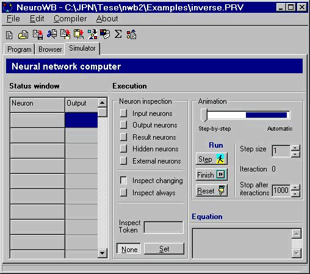
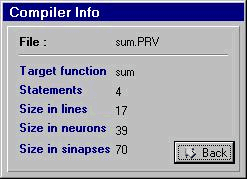

Introduction The field of Artificial Recursive Neural Networks (ARNN’s) is meeting a lot of excitement nowadays. Both because of their achievements in solving real world problems and their simplicity of the underlying principles that still allow them to mimic their biological counterparts. All this excitement attracts people from many different fields such as Neurophisiology, Biology and Computer Science, among others. We present our work in the Computer Science perspective. The view we are interested in, is the one in which an ARNN can be seen as a computing mechanism able to perform some kind of computation based on a program coded as a specific arrangement of neural artifacts, like neurons and synapses.
When informally speaking of a neural computer, one could be motivated about what could it be like, the language to program such a machine. The language that we will use is the one of partial recursive functions (PRF). Although primitive when compared to modern computer languages, it is simple and powerful enough to program any mechanism with same computing power as a Turing machine w.r.t. the class of functions it can compute. Surely, building complex programs with this language would be very difficult and more appropriate languages exist. For our purposes however, this language is suited. The PRF theory identifies the set of computable functions with the set of computable functions on . Such functions are called partial because we do not require them to be defined for every value of the domain. These functions are also called recursive, because each one can be obtained by recursive application of 3 rules (operations) over the axioms (the base set). Check this technical report for more information.
Example of a .PRV file (check below for the compilation result )
// Sum example
//
proj/1 U(1,1)
proj/2 U(3,3)
comp C( proj/2, S )
sum R( proj/1, comp )
The simulator workbench

Want to try it?
Get the zipped program - version 3, May 1998 [396k] : nwb3.zip
Get the paper that introduces NWB (in PDF) : Paulo J.F. Carreira, Miguel A. Rosa, J. Pedro Neto and J. Félix Costa. Building a Neural Computer. Technical Report DI/FCUL TR-98-8. Department of Computer Science, University of Lisbon. December 1998. read it
Contacts:
If you have some doubts, questions or comments about the program, email to
Miguel Rosa (mar@fccn.pt) or Paulo Carreira (pcarreira@oblog.pt)Questions about the method, email to João Pedro Neto (jpn@di.fc.ul.pt)
The result Neural Net after compilation of the sum definition:

| 0 if x < 0
sigma(x) = | x if x in [0,1]
| 1 if x > 1
XRin_1_0(i+1) = sigma( 1.0*Ein(i) + 0 )
XRmid2_1_1(i+1) = sigma( 1.0*XRin_1_0(i) + 0 )
XRmid3_1_2(i+1) = sigma( 0.10*XRin_1_0(i) + 1.0*XRmid3_1_2(i) + 1.0*XRmid4_1_3(i) + -1.0*XRmid5_1_4(i) + -1.0*XREout_1_15(i) + 0 )
XRmid4_1_3(i+1) = sigma( 0.10*XRmid3_1_2(i) + 1.0*XRmid5_1_4(i) + -0.9 )
XRmid5_1_4(i+1) = sigma( 1.0*XRmid6_1_5(i) + 0 )
XRmid6_1_5(i+1) = sigma( 1.0*XSout_5_7(i) + 0 )
XRmid7_1_6(i+1) = sigma( 1.0*XRmid3_1_2(i) + 1.0*XRmid15_1_14(i) + -1 )
XREres_1_7(i+1) = sigma( 1.0*XRmid13_1_12(i) + 1.0*XRmid19_1_18(i) + -1 )
XRmid9_1_8(i+1) = sigma( 1.0*XRmid5_1_4(i) + 1.0*XU(1,1)inout_3_0(i) + 0 )
XRmid10_1_9(i+1) = sigma( 0.20*XRmid9_1_8(i) + 10.0*XRdatay_1_10(i) + -1.2 )
XRdatay_1_10(i+1) = sigma( -1.0*XRmid9_1_8(i) + 1.0*XRmid10_1_9(i) + 1.0*XRdatay_1_10(i) + -1.0*XREout_1_15(i) + 1.0*Edata2(i) + 0 )
XRmid12_1_11(i+1) = sigma( 1.0*XRmid9_1_8(i) + 0 )
XRmid13_1_12(i+1) = sigma( 2.0*XRmid12_1_11(i) + -100.0*XRmid14_1_13(i) + -1 )
XRmid14_1_13(i+1) = sigma( 1.0*XRdatay_1_10(i) + -0.1 )
XRmid15_1_14(i+1) = sigma( 2.0*XRmid12_1_11(i) + 100.0*XRmid14_1_13(i) + -2 )
XREout_1_15(i+1) = sigma( 1.0*XRmid13_1_12(i) + 0 )
XRmid17_1_16(i+1) = sigma( 1.0*XRmid15_1_14(i) + 0 )
XRmid18_1_17(i+1) = sigma( 1.0*XRmid15_1_14(i) + 1.0*XRmid19_1_18(i) + -1 )
XRmid19_1_18(i+1) = sigma( -1.0*XREout_1_15(i) + 1.0*XRmid19_1_18(i) + -10.0*XRmid20_1_19(i) + 1.0*XRmid21_1_20(i) + 1.0*XU(1,1)datares_3_1(i) + 0 )
XRmid20_1_19(i+1) = sigma( 1.0*XSres_5_9(i) + 0 )
XRmid21_1_20(i+1) = sigma( 1.0*XRmid20_1_19(i) + 0 )
XRdata1_1_21(i+1) = sigma( 1.0*XRdata1_1_21(i) + -1.0*XREout_1_15(i) + 1.0*Edata1(i) + 0 )
XRmid22_1_22(i+1) = sigma( 1.0*XRdata1_1_21(i) + 1.0*XRin_1_0(i) + -1 )
XRmid23_1_23(i+1) = sigma( 1.0*XRdata1_1_21(i) + 1.0*XRmid15_1_14(i) + -1 )
XU(1,1)inout_3_0(i+1) = sigma( 1.0*XRmid2_1_1(i) + 0 )
XU(1,1)datares_3_1(i+1) = sigma( 1.0*XRmid22_1_22(i) + 0 )
XU(1,1)data_3_2(i+1) = sigma( 0 )
XCmid1_3_3(i+1) = sigma( -1.0*XCmid1_3_3(i) + 1.0*XCmid8_3_7(i) + 0 )
XCmid2_3_4(i+1) = sigma( 1.0*XCmid1_3_3(i) + 0 )
XCmid6_3_5(i+1) = sigma( -1.0*XCmid7_3_6(i) + 1.0*XCmid6_3_5(i) + 1.0*XU(3,3)datares_5_4(i) + 0 )
XCmid7_3_6(i+1) = sigma( 1.0*XCmid6_3_5(i) + 1.0*XCmid1_3_3(i) + -1 )
XCmid8_3_7(i+1) = sigma( -1.0*XCmid1_3_3(i) + 1.0*XCmid8_3_7(i) + 1.0*XU(3,3)inout_5_3(i) + 0 )
XU(3,3)inout_5_3(i+1) = sigma( 1.0*XRmid17_1_16(i) + 0 )
XU(3,3)datares_5_4(i+1) = sigma( 1.0*XRmid18_1_17(i) + 0 )
XU(3,3)data_5_5(i+1) = sigma( 1.0*XRmid23_1_23(i) + 1.0*XRmid7_1_6(i) + 0 )
XSin_5_6(i+1) = sigma( 1.0*XCmid2_3_4(i) + 0 )
XSout_5_7(i+1) = sigma( 1.0*XSin_5_6(i) + 0 )
XSdata_5_8(i+1) = sigma( 1.0*XCmid7_3_6(i) + 0 )
XSres_5_9(i+1) = sigma( 1.0*XSin_5_6(i) + 0.10*XSdata_5_8(i) + -0.9 )
December 1999